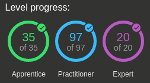

Burp labs week 6: Done!
Posted on June 7, 2020
After 6 weeks of fun and pain, I've completed all the 152 (at the time of writing) Burp labs and ranked 16th worldwide!


The quality and experience of the labs has been fantastic, and there is a huge element of transferability between the content experienced in the labs and real life engagements.
Focused on the Authentication labs this week and had a lab in particular that proved to be quite troublesome as the lab kept expiring. Figured out another way and uploaded it to my github here.
I will be taking a break now to write the overall Burp labs experience writeup and get some rest and recovery, and plan my next projects. I should also move those weekly updates to an archive.